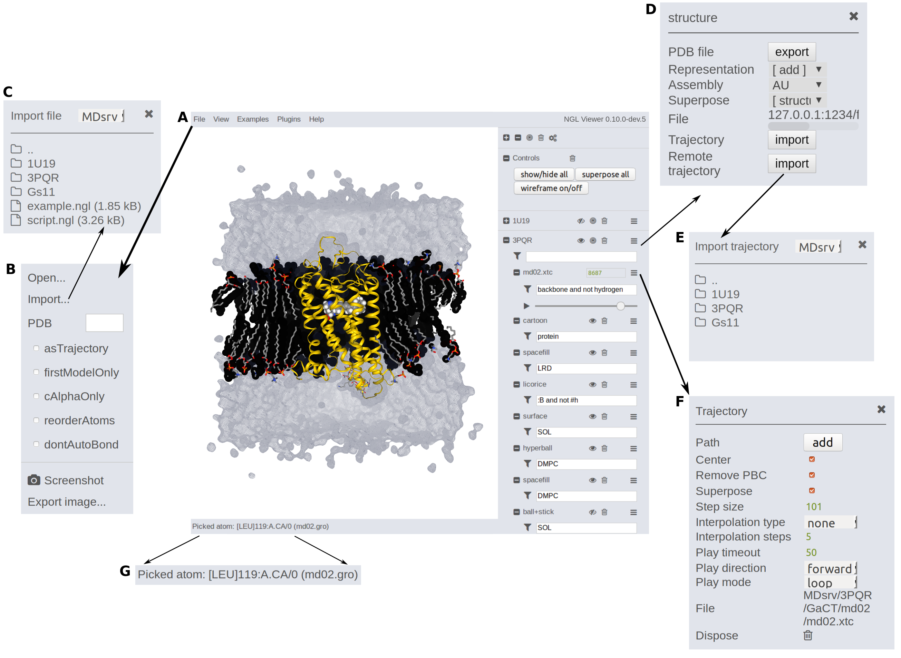

Loading simulations
Simulations can be loaded in several different ways into the NGL GUI. The main focus of the MDsrv is to make deposited (remote) simulations available to others. Still, we provide an option for viewers (meaning those who have received a MDsrv session) to load their local trajectories, e.g. for comparison with the deposited simulations data into the session.
Regardless of the method used to load simulations into the NGL GUI, a structure file has to be provided first. Structure and .ngl scripting files can be loaded by drag&drop into the viewer or by browsing through the folders by clicking File --> Import (A, B, C).
Loading local trajectories
MDsrv allows to temporaly load local trajectories e.g. for comparison into the NGL GUI or into prepared sessions (available until reload).
After a stucture file has been loaded (as described above),
Loading remote trajectories
Within the structure menu, several trajectories can be imported via Trajectory import for autoloadable trajectories (currently supported for dcd and xtc files supported) or Remote trajectory --> Import for deposed trajectories (D, E).
If you want to load a trajectory containing already all atomistic information (e.g. .gro trajectories), select File --> as trajectory (A, B) before loading the file. This flag is set until it is removed. Then load the file as previously described via drag&drop or through the folders.
Simulation settings
The processing content of the simulation can be specified through the filter selection (e.g. "protein and not hydrogen"). Within the trajectory menu (F), the simulation can be further adjusted (e.g. centering, superposing, removing PBC, step sizes or play options). Read more in the Viewing section.
More
If you have any questions, found some bugs, or want to report enhancement requests use the Issue Tracker, use the contact formular or write a mail to johanna.tiemann@gmail.com or alexander.rose@weirdbyte.de.
Please give us feedback!